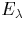
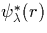

Obtaining an expression for the kinetic energy of the electrons in terms of the charge density is a harder problem. The first approximation, the local density type of Thomas Fermi approach described above is not sufficiently accurate [18]. It is therefore necessary to break up the charge density into a set of orthonormal orbital functions, as first proposed by Kohn and Sham [17]. These are single particle wavefunctions in a non-interacting system (since interaction terms have been included through Exc). For simplicity here we only consider the spin averaged theory,
| (9) |
This means we can now write an expression for T, the kinetic energy, as
| (10) |
Once the total number of electrons and spin of the system are fixed, these orbitals can be determined using two constraints. Firstly we minimise the energy with respect to the charge density. Secondly different orbitals are kept orthogonal, and normalised through the introduction of a set of Lagrange multipliers, . Therefore we minimise
| (11) |
Differentiating this with respect to  gives
| (12) |
It can be seen that Equation 2.6.23 is a single particle Schrödinger equation, as we originally proposed in this section. If we therefore rewrite Equation 2.6.23 in terms of an effective potential, , we obtain
These three equations together constitute the Kohn-Sham equations, and the self-consistent solution of these leads to the ground state charge density of the system. Note that this does not necessarily correspond to the ground state of the total system since the ionic component has been removed; the energy with respect to ionic position has to be minimised in addition to this. In practise the forces on the ions are iteratively minimised, and for each iteration the Kohn-Sham equations are solved to find the charge density ground state for that ionic configuration.